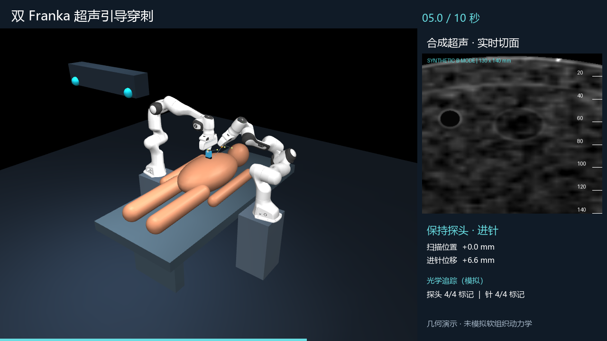

01 / 扫描定位
0–4 秒，探头沿人体纵向从约 −65 mm 移到 0 mm。针保持 −12 mm 的入针位移，超声组织截面随扫描位置连续变化。
模拟人的双手协同：一臂持超声探头完成扫描，另一臂持针完成进针与退针。将机械臂运动、组织切面与光学标记位姿放到同一场景中观察。
0–4 秒，探头沿人体纵向从约 −65 mm 移到 0 mm。针保持 −12 mm 的入针位移，超声组织截面随扫描位置连续变化。
4–7.2 秒，探头保持在扫描中心。针沿成像平面内、与声束法向成 35° 的方向推进，指令位移从 −12 mm 增至 65 mm。
7.2–10 秒，探头保持不动，针沿原路径退出至 −12 mm。亮针回波随针的位置改变。本片没有演示人体移动。
原型将两条 Franka Panda 放在人体两侧。探头和针刚性连接在各自末端，人体由椭球与胶囊等几何体构成，外置 RGB 相机同时观察人体、双臂和工具。交互界面支持扫描横纵位置、探头倾角、进针位移、人体平移和旋转。
| 模块 | 实现 | 输出 |
|---|---|---|
| 场景与机器人 | Menagerie Panda 网格及关节结构；mjlab SceneCfg 与 MjSpec 组合场景 | 18 个关节位置变量，16 个执行器，1 个 RGB 相机 |
| 运动 | 两臂分别进行末端位姿逆运动学求解，限制关节范围后执行 MuJoCo 正运动学 | 末端实际位姿与位置误差 |
| 人体 | 基本几何外形；内部程序化组织随人体坐标系平移、旋转 | 统一的人体外形与组织空间 |
| 工具 | 探头与针刚性安装；各配置四个非共面反光标记 | 探头成像坐标、针尖坐标、标记世界位置 |
以实际探头末端位姿为基准，局部 X 轴为图像横向，局部 Z 轴为深度，采样 130 × 140 mm 的切面。切面映射回人体坐标后，计算组织层、血管和病灶、固定三维散斑及深度衰减。针段靠近切面时形成亮回波，探头离开接触高度时信号减弱。
每个工具四个标记的模拟三维测量叠加 0.25 mm 标准差噪声，再进行刚体最小二乘拟合。输出工具在追踪仪坐标系中的位置、XYZW 四元数、拟合残差和有效性；少于三个可见标记时不输出有效位姿。

| 检查 | 方法与结果 | 解释范围 |
|---|---|---|
| 视频轨迹 | 读取 200 帧遥测，取两臂位置残差的最大值：0.398451 mm | 仅为该轨迹的逆运动学数值残差，不是穿刺精度或实体机器人精度 |
| 代表性位姿 | 检查默认、扫描、倾斜和人体移动组合；位置残差低于 2 mm，关节处于限位内 | 未覆盖全部滑块组合，也未验证避碰 |
| 图像变化 | 改变扫描位置、倾角和进针位移，图像平均绝对差均超过测试阈值 | 验证图像与状态相关，不证明超声物理真实性 |
| 追踪坐标 | 零噪声下，拟合坐标与变换后的标记位置在 1e−10 m 数值容差内一致 | 验证刚体变换与拟合实现；并非测量设备精度 |
| 模拟追踪有效性 | 本视频 200 帧、两套工具追踪均有效 | 只按视场与距离判定，不能推断无遮挡或真实可观测性 |
当前完成的是场景构建、几何运动、合成图像与模拟追踪的联动原型。mjlab 用于场景组合和编译；演示直接设置逆运动学关节解，再进行 MuJoCo 正运动学与渲染。它尚未运行 mjlab GPU 动力学或强化学习训练。
已有项目环境下，可运行以下命令生成相同阶段的视频。mjlab 环境与 CPU 演示环境分别安装，避免混用 MuJoCo 版本约束。
# 项目目录内运行
.venv-mjlab\Scripts\python.exe -m dual_arm.video --seconds 10 --fps 20
.venv-mjlab\Scripts\python.exe -m unittest discover -s tests -v
# 交互界面
.venv-mjlab\Scripts\python.exe -m dual_arm.app --backend mjlab报告随附可复现的项目源码包（不含虚拟环境与机器人网格）。解压后按 README 安装依赖，运行 download_assets.py 获取 Panda 网格。